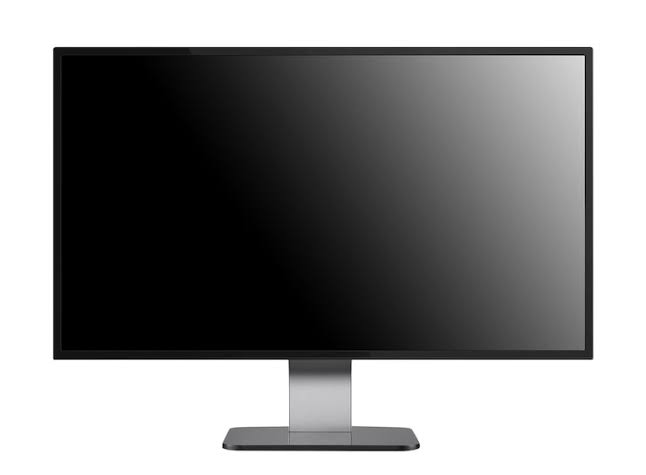

Il monitor è una periferica di uscita del computer.Permette di visualizzare testi, immagini, video e i risultati delle operazioni eseguite.
Lo schermo è formato da piccoli punti chiamati pixel,che insieme compongono le immagini.La risoluzione indica il numero di pixel dello schermo.
Muovendo il mouse, possiamo vedere il puntatore spostarsi sul monitor. Utilizzando la tastiera, possiamo scrivere testi che vengono visualizzati sullo schermo.